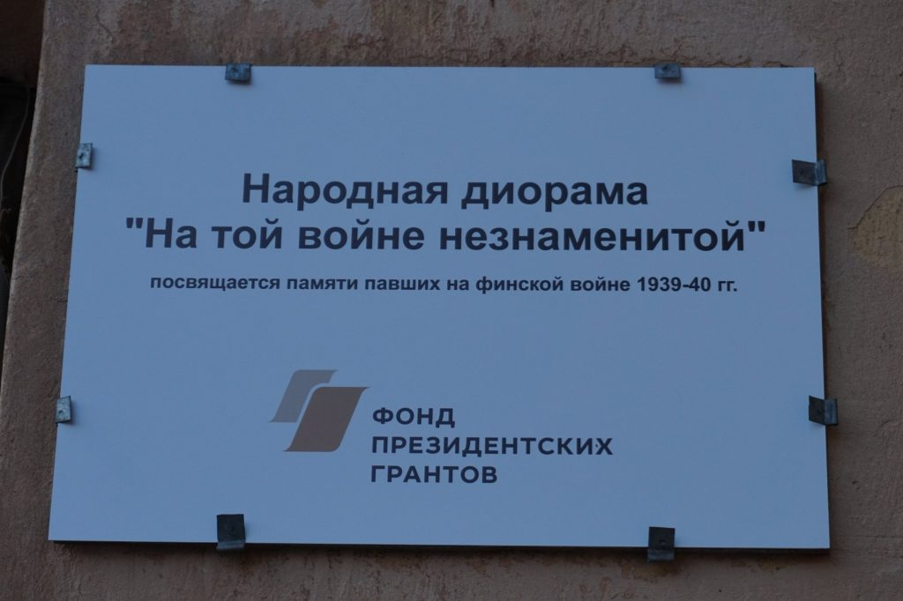
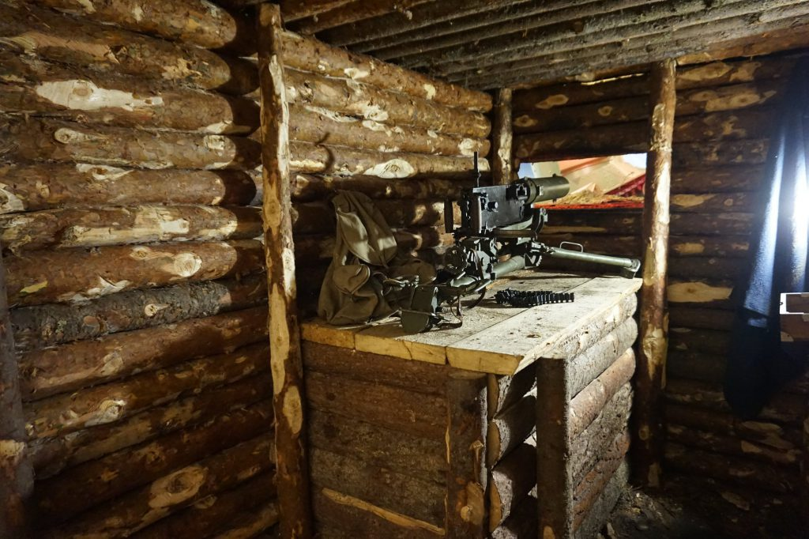
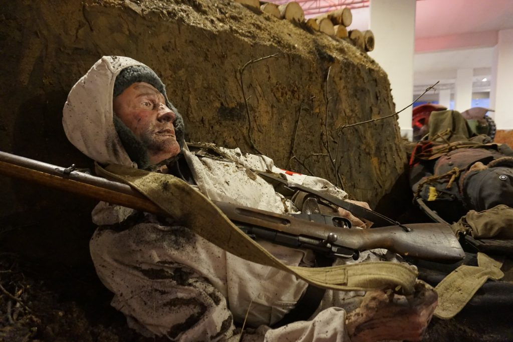
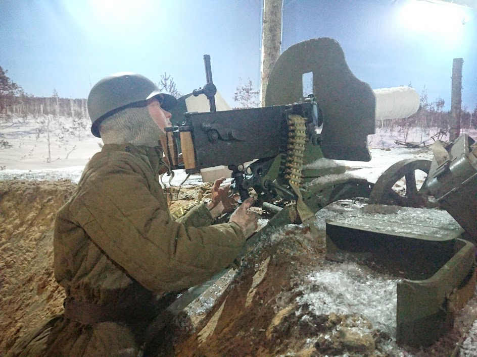
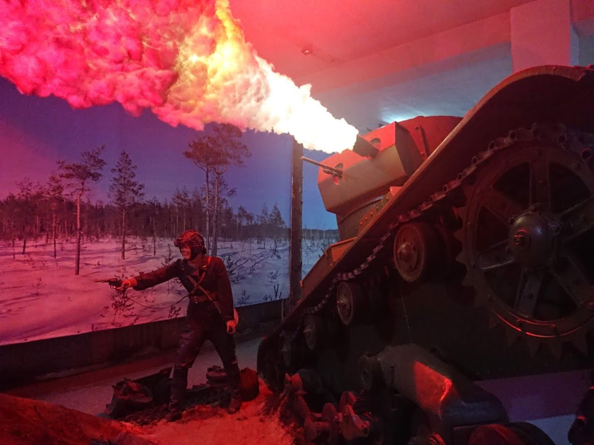
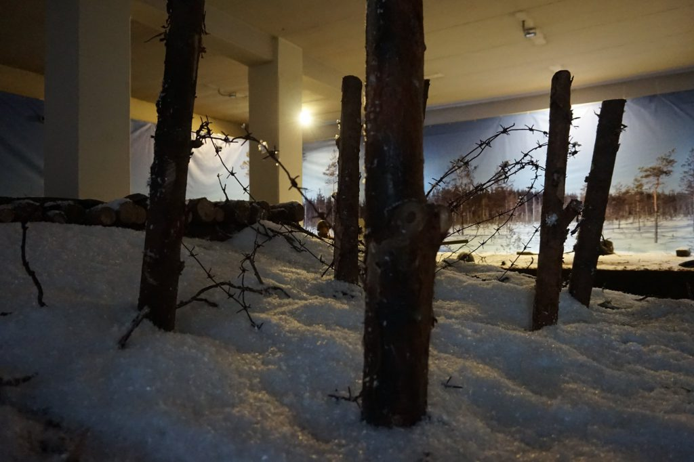

6 апреля 2018 года, мы открыли народную диораму «На той войне незнаменитой».
Она является результатом совместных усилий очень многих людей и организаций. Фонд Президентских грантов выделил средства для закупки материалов, макетов и манекенов для диорамы. Добровольцы два месяца проводили свои выходные и отгулы на диораме, проделали огромную работу по проектированию, строительству и монтажу диорамы. Профессионалы высокого класса из Санкт-Петербурга и Новгорода построили макеты танка и пушек, создали манекены. Поисковики уже двадцать лет передают для нашего музея экспонаты – находки с мест боев. 138-я гвардейская мотострелковая бригада из Каменки оказала помощь рабочей силой. Коллеги из Финляндии оказывали помощь в поиске архивных материалов для разработки концепции диорамы. Персонал музея работал на строительстве диорамы почти круглыми сутками.
  Без всех этих людей, организаций и их усилий создание этой диорамы было бы невозможным. Эта диорама посвящена одному из самых трагичных событий 20 века на Карельском перешейке и одному из важнейших событий в истории нашего соседа – независимой Республики Финляндия. Задача этой новой музейной экспозиции – рассказать общественности о войне 1939-40 годов, увековечить память тех, кто сражался на финской войне – как советских, так и финских воинов, и дать возможность молодым людям по обе стороны границы задуматься о ценности мира.
Диорама открывается в день, когда православные отмечают Страстную пятницу. Для верующих это день скорби и воспоминаний. Однако за смертью и распятием наступает воскресение. Смерть конечна. Так же конечна и любая война. За войной наступает мир. Наша диорама – уважительный рассказ о прошлых поколениях наших стран и воззвание к миру для грядущих поколений.
